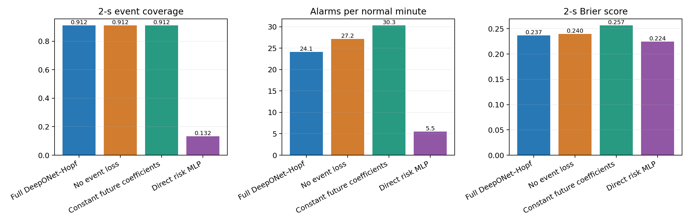
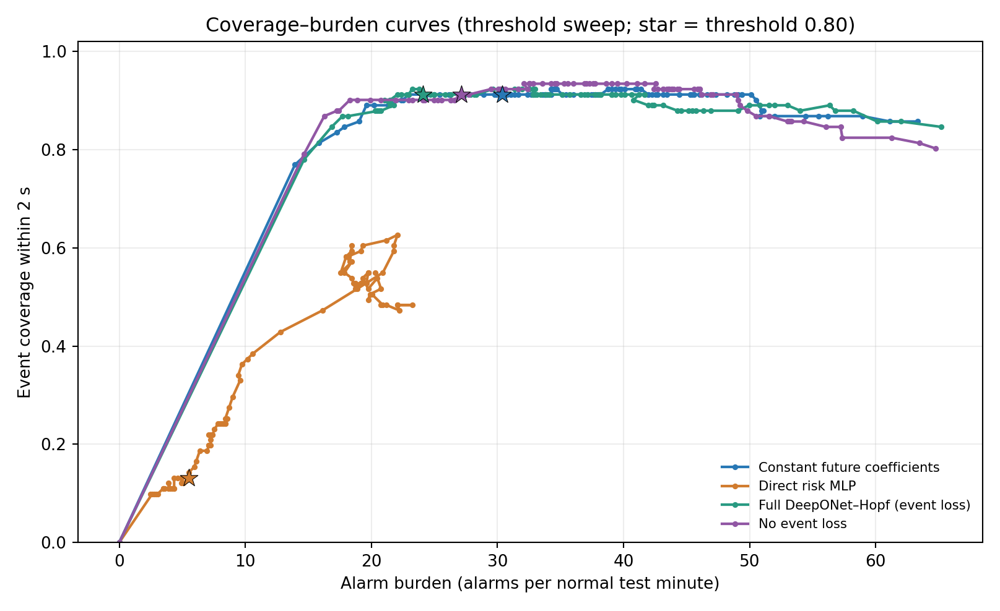

| Method | Coverage within 2 s | Alarms | Alarms/min | Median lead (s) | Brier (2 s) | Scored origins |
|---|---|---|---|---|---|---|
| Full DeepONet–Hopf (event loss) | 83/91 (91.2%) | 166 | 24.1 | 0.685 | 0.237 | 8171 |
| No event loss | 83/91 (91.2%) | 187 | 27.2 | 0.685 | 0.240 | 8171 |
| Constant future coefficients | 83/91 (91.2%) | 209 | 30.3 | 0.735 | 0.257 | 8171 |
| Direct risk MLP | 12/91 (13.2%) | 38 | 5.5 | 1.430 | 0.224 | 8171 |

Event coverage counts an alarm only if it occurs after the previous reference event ends and no more than 2 s before the reference onset. Brier uses normal test origins with a complete 2-s follow-up. These are retrospective within-record results, not held-out-participant validation.
Summary CSV · Per-record results · Event-level matches · Alarm table · Protocol
This is a post-hoc threshold sweep on the same held-out test segments; it is descriptive and was not used to select the 0.80 threshold. With 128 simulated paths, DeepONet–Hopf risk is quantized in steps of 1/128, leaving a gap between zero alerts and roughly 14–15 alarms per normal test minute. Therefore, this sweep does not provide an exactly burden-matched DeepONet–Hopf versus MLP operating point.

Curve PDF · Threshold sweep CSV · Burden match brackets CSV · Chinese interpretation